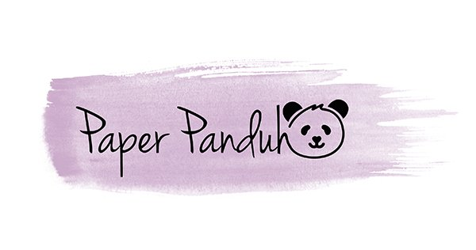

Subscription Boxes
The idea of subscription boxes isn't a new one they've existed for years however with the increasing popularity of utilizing social media on a daily basis. The use of subscription boxes has increased exponentially and with the growing popularity of stationery a lot of companies have started making subscription boxes for stationery hoarders like myself. Now while there are a lot of different subscription boxes I personally am only subscribed to two of them.
The first subscription box I acquired was Panduh Box which is provided by a company called Paper Panduh. Paper Panduh is a stationery company that carries a wide variety of stationery products. Varying from all kinds of stickers that are typically used for a variety of planners to washi tape. So far I have just recieved my March Box from them and I got a wide variety of stickers some of which were super useful to me and others that were not. However I have a friend that like using his planner almost as much as I do so I gave them to him. Between the packaging and the products I'm a huge fan of the products that panduh box provides and given that its only $19.99 a month its a phenomenal price considering how many items you get for it.